足王神社/岡山県
足王神社に行ったよ。
ここは足の神様として近在の人のみならず、他県の人からも篤く信仰されている神社だ。
赤磐市の南部にあるこの神社、近くには備前国分寺跡や両宮山古墳などがあり、由緒あるお土地柄なのだが、現在ではゴリゴリのニュータウンの一画。
電車とバスを乗り継ぎ着いたところはこんなとこ。
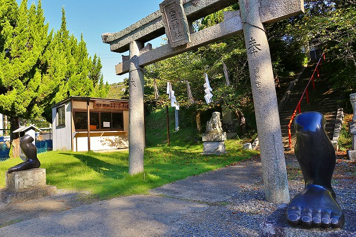
鳥居の両サイドに黒御影石で出来た足が。
いくら足の神様とはいえ、足だけ奉納って…。
足はキッチリ磨きこまれている。何だか今にも走り出しそうな勢いだね。
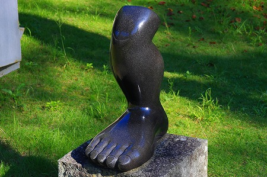
足は膝上からスパ！ッと切られており、断面には奉納者の名前が刻まれていた。
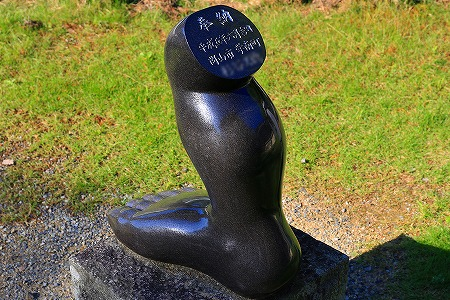
足の神様なんだから気持ちは判らなくもないんだけど、膝上でスパ！ってのはどんなもんでしょうか？
鳥居を潜るとその先は階段。
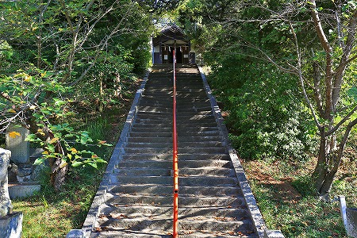
その上に建物が見える。
ちなみにココを訪問したのはド平日の朝８時。
普通なら仕事に向かって満員電車に揺られているはずのいい年したおっさんがカメラをぶら下げてウロウロしているのは相当違和感があったらしい。
ここへ来る道中、犬の散歩をしている人や登校中の小学生、それを見守るお母さんや先生方、バスを待っている人などに相当怪しまれたよ…。
ま、必要以上にさわやかに挨拶してやったけどな。参ったか。
んで、階段を登りきったところにある鎌殿という建物。
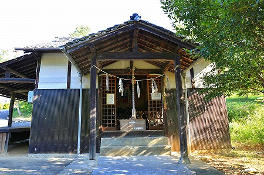
地味な外観なれど内部はただならぬ雰囲気。
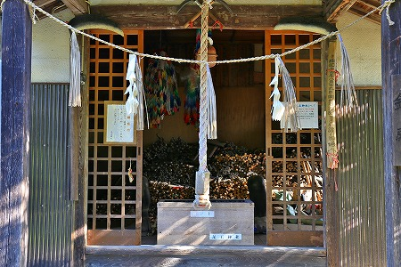
うはー。
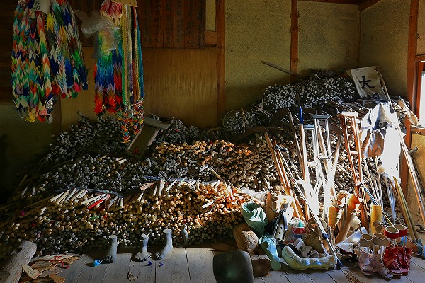
無数の「何か」が堆積している。
近寄ってみると…
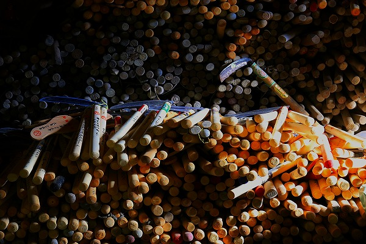
鎌じゃないの！
何でも病を断ち切る、という意味で鎌を奉納するのだとか。
板の間に床が抜けそうな量の鎌が積み上げられている様は少しぞっとする。
堂内にも膝上でスパ！の足型が奉納されていた。
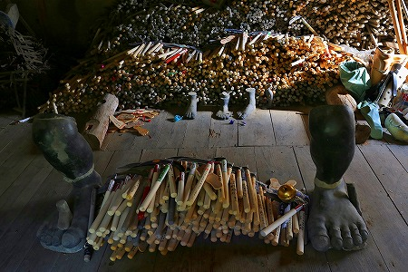
さっき入り口にあった石の足型はこれをモチーフにして作ったのだろう。
近くで確認できなかったが陶製のようだ。
石の足型に比べて指の関節の盛り上がりなどが細かく表現されていて、えも言えぬ迫力があった。
手前には新しい釜が積み上げられている。
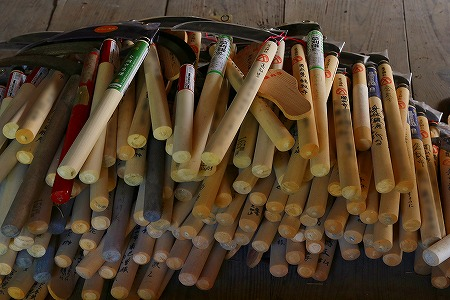
この年奉納された鎌なのだろうか、そして来年には奥に移動するのだろうか。
足の神様だけに松葉杖や義足、装具なども奉納されている。
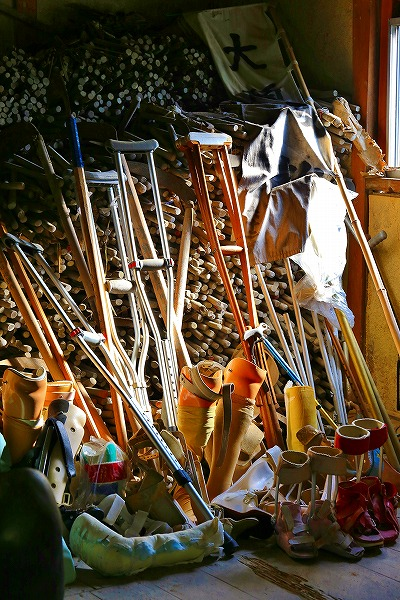
ビジュアル的にギョットされるかもしれないが、こちらの方が足の神様の奉納物としてはポピュラーだ。
むしろ足の神様で鎌奉納って他にあったかなあ…。
普通足型かわらじだよねえ。
片隅には鉄の鳥居、そして大量の糸切り鋏が束ねられている。
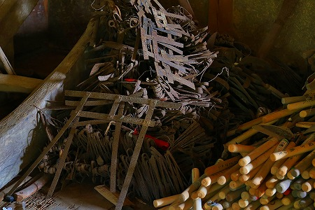
これらは錆付いており、かなり前に奉納されたことが伺える。
元々糸切り鋏を奉納していたのが何らかの理由で鎌に変更されたのかもしれない。
…皆さん真剣に足の病に悩み、奉納されているのは重々承知の上で敢えて言わせていただくが、鎌って足の神様の奉納物としてあまりそぐわないような気がする。
先の足型のせいで病を断ち切るというより、どうしても足を鎌でスパッと切断してしまうイメージの方が頭の中では先に浮かんでしまうんですけど…。
いや、私の勝手な思い込みなので、気にしないで下さい。
見上げれば上にも鎌が。
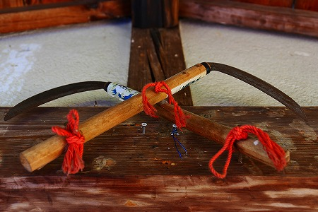
さらに大きすぎて気が付かなかったが、扉の脇にも巨大な鎌が奉納されていた。
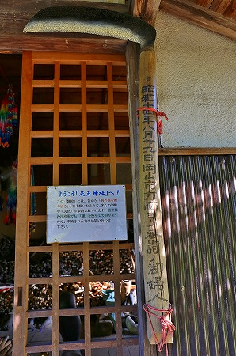
この神社、元々江戸時代の終わりに梶浦勘助という人が自宅で足名椎命と手名椎命の二神を祀っていたのだが、あまりにも手足の御利益が凄いので近隣の人にも公開しよう、と現神社の近くに遷宮したもの。
さらに昭和28年に大国主命を招魂し三柱を祭神とし、宗教法人化されたのだ。
ところで手の神様と足の神様が祀られているのに何故足の神様だけがクローズアップされたのだろう？
この地は旧山陽道にも近く、多くの旅人が往来した。
そんな場所だからこそ手よりも足の方が重要視されたのではなかろうか。いやあくまで私見だが。
鎌殿だけでお腹一杯なのだが、それだけ見て帰るのは気が引けるので本殿にもお参りしよう。
境内にあった木製の電柱。最近現役で使ってるのは見なくなったなあ。
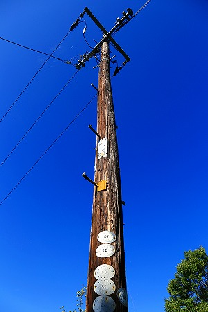
んで本殿、つか拝殿
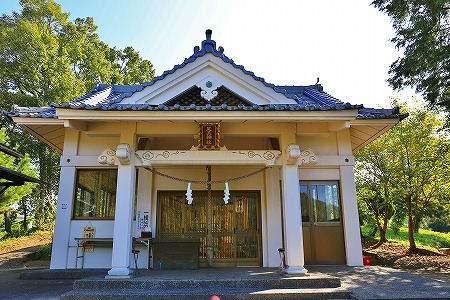
ＲＣ造の比較的あっさりとした拝殿。
中を覗くとゴルゴ１３のコミックスの背表紙みたいな西洋の悪魔が担いでそうな巨大な鎌(ニセモノ）が奉納されていた。
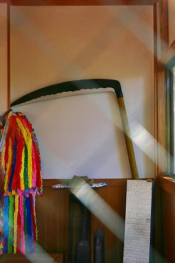
拝殿脇には奉納用の鎌が販売されていた。
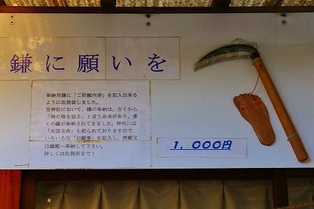
足王神社オリジナル鎌には足型が付いてるのかー。
神社のすぐ裏に出たらバス停があった。
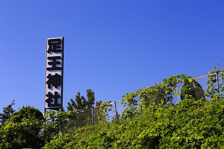
路線図を見たら岡山駅にダイレクトで行けるじゃない！
岡山駅から電車とバスを乗り継ぎ、さらに小１時間も歩いたのにい〜。
ま、これも普段ろくに歩かない私に対する足の神様の思し召しであったと思うことにしよう。
いや、単に入念な下調べをしなかっただけ、ともいえるが…。
2014.09.
珍寺大道場 HOME